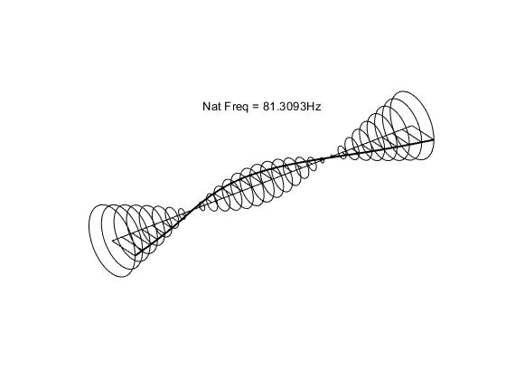

Internal damping instability of rotors with isotropic and anisotropic supports based on complex coordinates formulation
Dokuz Eylül Üniversitesi Mühendislik Fakültesi Fen Ve Mühendislik Dergisi, 27(80), pp.257-266, 2025. Journal Article

Abstract
This study investigates the advantages and disadvantages of complex coordinates formulation for internal damping stability of rotordynamic systems. Damping mechanisms inherent to the rotor structure have different effects on vibrations when compared to stationary damping sources. The internal and external damping sources experience different vibration frequencies with respect to the stationary reference frame. Thus, in contrast to external damping, internal damping does not always stabilize vibrations. Therefore, the correct incorporation of damping forces into the model is investigated to predict vibration characteristics accurately. A unified finite element model is developed to study rotordynamic stability due to internal damping caused by frictional joints between rotor parts and structural damping. Rotating bearing elements are used to model internal frictional joints and the governing equation with hysteresis damping is provided using complex vector notation for rotors on isotropic and anisotropic mounts. Complex coordinates formulation provides mathematical advantages in transformation of vectors between rotating and stationary reference frames. In the case of isotropic supports, the use of complex coordinates formulation yields a low-dimensional model and increases the efficiency of the model. However, in the case of anisotropic supports, reduction in the order of the model is not possible and the equation of motion is nonlinear due to kinematics of the system. This requires an iterative method to solve the eigenvalue problem. For verifications, the results of the developed models are compared to those of a commercial finite element software. Consequently, the effect of different internal damping sources on the overall rotordynamic stability is demonstrated.